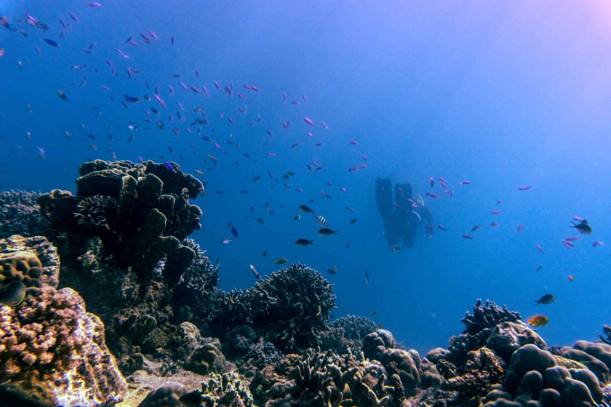
Tamar
PROTEJA AS
Tartarugas
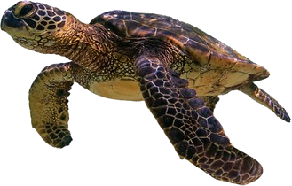
UMA TARTARUGA
VALE MUITO MAIS
VIVA DO QUE
MORTA
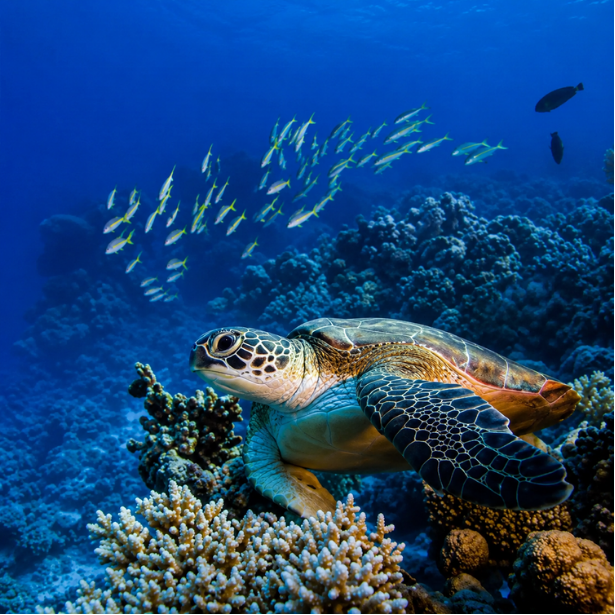
As tartarugas são muito importantes para o equilíbrio da natureza. Elas mantêm o equilíbrio ecológico ao controlar populações de águas-vivas e esponjas, cuidar da saúde dos recifes de corais e pastagens marinhas, e fornecer nutrientes vitais para as praias e vegetação costeira por meio de seus ninhos.
Tartarugas-de-pente limpam esponjas que sufocam os recifes.
Tartarugas-verdes aparam a grama do mar para crescer forte.
Ovos que não viram filhotes alimentam a areia e plantas da praia.
O PROBLEMA
DO LIXO E
DO PLÁSTICO
A poluição dos oceanos é uma das ameaças às tartarugas. Elas podem ingerir resíduos ou ficar presas em materiais descartados no mar. O Projeto Tamar registra a ingestão de lixo entre as causas associadas ao encalhe de tartarugas. Além disso, pesquisas indicam que praias onde as tartarugas fazem seus ninhos também podem apresentar contaminação por microplásticos.
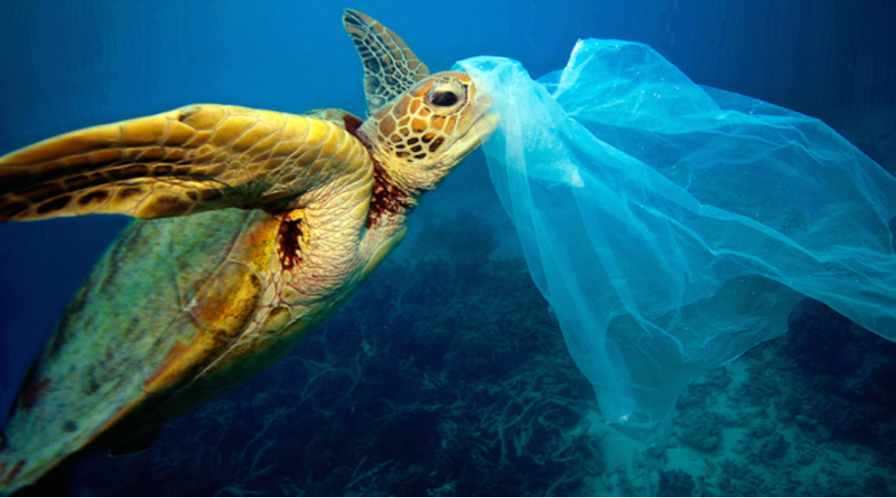
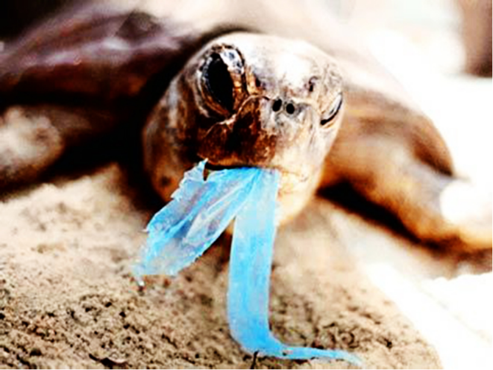
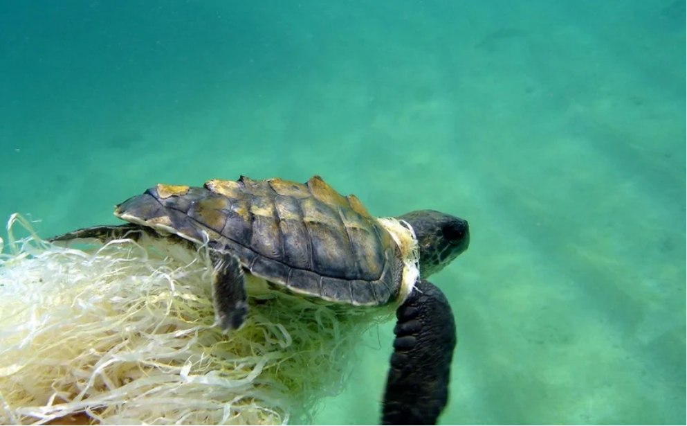
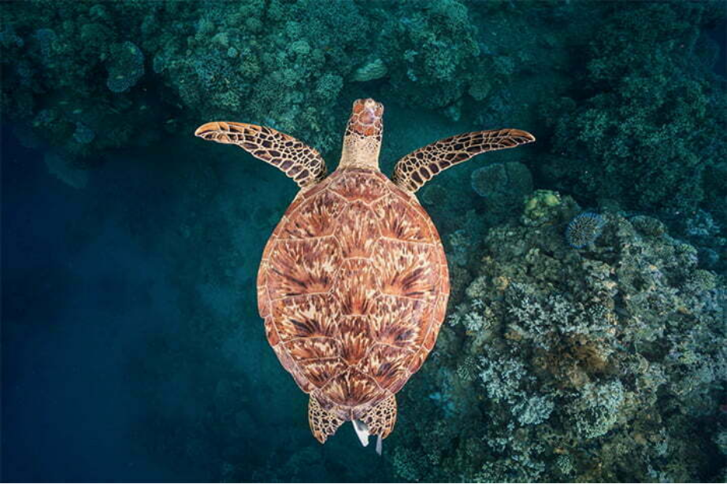
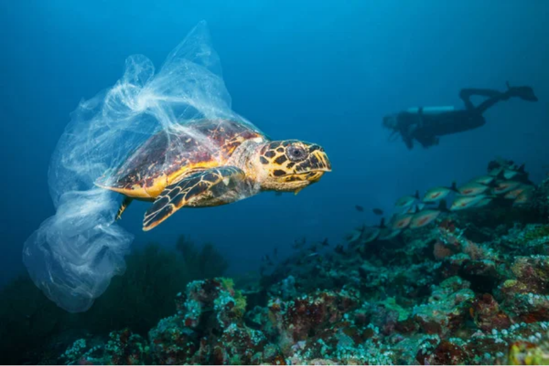
COMO PODEMOS
AJUDAR?
Cada pessoa pode contribuir para a conservação das tartarugas:
- Não jogar lixo nas praias ou no mar.
- Reduzir o consumo de plásticos descartáveis.
- Recolher resíduos encontrados na praia, quando for seguro fazê-lo.
- Respeitar áreas de desova e não mexer nos ninhos.
- Evitar veículos em áreas de praia onde isso seja proibido.
- Apoiar projetos de conservação e educação ambiental.
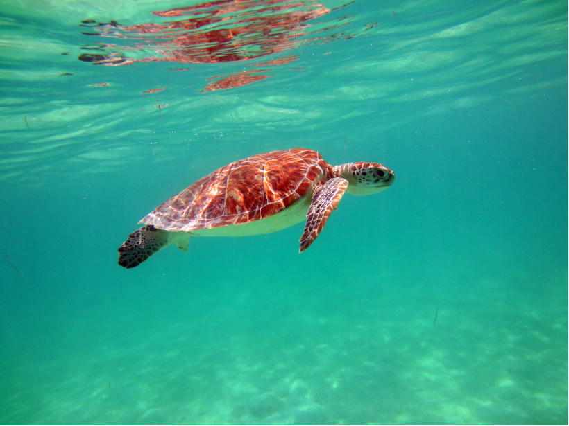
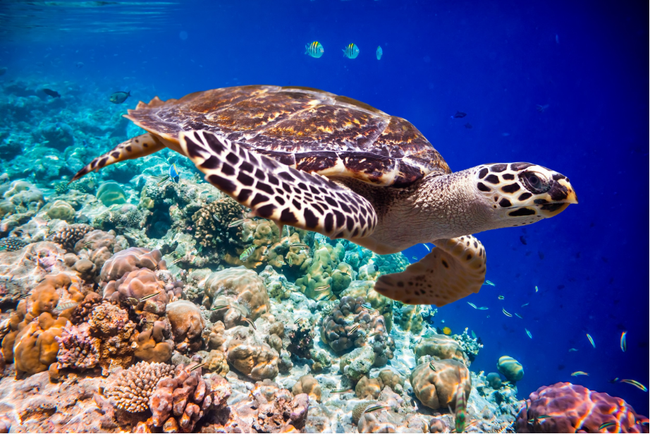
PROJETO
TAMAR
O Projeto Tamar é uma iniciativa brasileira criada em 1980 para promover a pesquisa, conservação e proteção das tartarugas marinhas. Ao longo de sua história, o projeto passou a atuar também com educação ambiental, interação com comunidades e pescadores e conscientização da população sobre a importância desses animais.
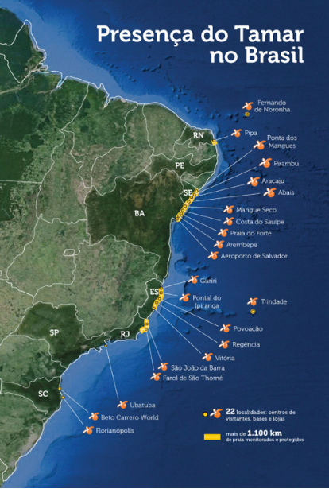
LOCALIZAÇÃO
Visitar um Centro de Visitantes do Projeto Tamar é uma maneira de aprender sobre as tartarugas e entender por que precisamos protegê-las. A conscientização ajuda a transformar pequenas atitudes, como não jogar lixo nas praias e respeitar os animais, em ações importantes para a conservação dos oceanos.